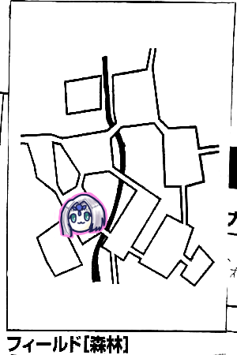
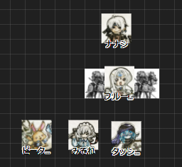
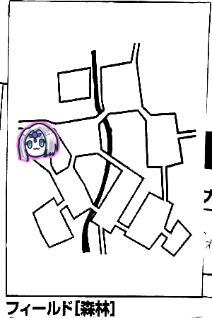
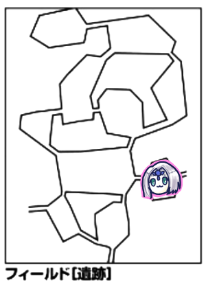
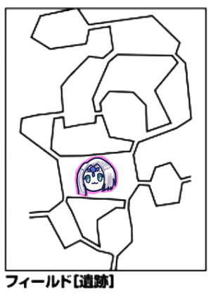
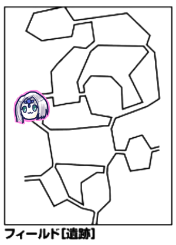
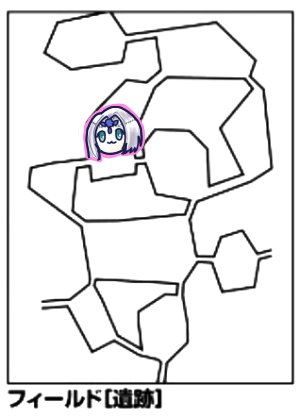
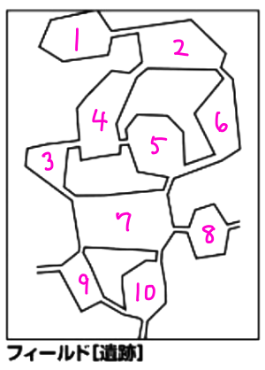
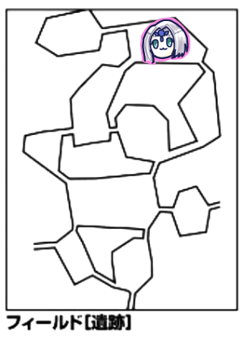

GM「今日からエターナル2期目でございます！1期ラストではエターナルを発見し、ローレンス・ベルチの奥さんが光の中に消えてしまった話を聞かされました。果たして村長は彼女に再開することができるのか！？君たちはエターナルの真実へと辿り着けるのか！？というわけでまずはミッション選択からどうぞ」
みぞれ「私スフィンクスに乗りたいんだよね」
GM「目指せライダー15レベル」
ナナシ「魔剣が欲しいんですけどそういうのはないんですか」
GM「魔剣どころかまだ出てきてない武器が10個以上ありますね」
ひとまずミッション「エターナルの扉への探索」を選択しました。
石版を3枚以上持って行けば達成となります。
GM「それではですね、村長さん、村長さんって言い方もあれだな」
ブルーローズ「町長さん」
ピーター「砦管理者」
GM「今は発展レベル5か、人口3000人だね」
ナナシ「3千人って僕の地元の人口ですね」
GM「村長曰く、君たちが見つけたものはエターナルの玄関口に過ぎない。真のエターナルへの扉は石版で封じられている。石版には5つの目の紋章がついているはず、それを見つけてきてもらいたい。持ち帰ったらローレンスが鑑定してくれますよ」
みぞれ「鑑定？偽物があるってことか」
GM「そうですね。偽物はエターナル関連のことが書いてあるものだったりします。報酬は4500ガメル」
「村お金持ちになってきたんだな」
GM「あ、シドにマップの情報もらえますよ。情報は600ガメルになります」
ナナシ「やすい」
みぞれ「これが昔は大金だったな」
GM「なんで知ってるかは適当に考えておくれ」
ピーター「古文書を頑張って獲得してマップ関係だからシドに渡した」
GM「美しい」
GM「ではフィールド『遺跡』の情報です。主はグレータードラゴンです」
ピーター「お、魔物知識判定します。へーい、26」
GM「LV18モンスターです。弱点を抜きましたおめでとうございます。主はかけらが入ってるのでHP+90です」
「こっわ」
ピーター「さっきまでLV15の話とかしてたのに」
GM「火炎も吐くよ」
ナナシ「みんなドワーフになりたいですね」
GM「あとマップ左上が主の巣になります。もちろん移動します」
山岳→森林ルートで遺跡へ向かうことになりました。

ブルーローズ「イベント2！主の探索は振らなくていいんですよね」
GM「主死んでるからね」
ナナシ「探索します。7」
ピーター「探索します。7」
みぞれ「探索します。7」
「なかよしか？」

ナナシ「イベント5、山岳イベント2です」
ブルーローズ「みんな伏せてくださーい！」
GM「はい。大規模な崖崩れが発生しました。全員25点ダメージです」
ブルーローズ「エターナルが突然現れたのでこの辺の地盤に影響があるようですわね！」
ピーター「ウィスパーヒール2回撃てばいいかな。成功、みんな30点で足りるよね」
GM「全然ウィスパーじゃないな」
ブルーローズ「ビビッド歌います」
ピーター「ウィスパーヒール1回分が回復しました」
GM「やすい」
ピーター「MP軽減2してるからね」

みぞれ「イベント2、へいわー」
「探索して、と…GM、GMいますかー？」
「GMどうした」
「GMの霊圧が消えた」
「レミングに恨まれたか？(探索でレミングの歯ばかり出ている弊害)」
「ここレミング死にすぎでしょ」

タッシュ「イベント4、山岳イベント3です」
GM「突風が吹いてきました。生命抵抗力判定どうぞ」
全員抵抗しました。
GM「落下距離は冒険者レベルによるから1ガンダムになるんだけど…」
全員「……」
GM「はい18mです、しょーもないオタクでごめんなさい」

ピーター「イベント4、山岳イベント4です」
GM「危険感知判定をどうぞ」
ナナシとみぞれが失敗して1点ダメージもらいました。
GM「こいつは白い悪魔ですね。2人は毒にかかります」
タッシュ「集落で毒消し売ってもらえばいいんじゃない」
GM「1つ200ガメルだよ」
ピーター「とりあえず見識判定します。成功」
「毒ってどれぐらい持続するんだっけ、フィールド移動で消えない？」
GM「見識判定は…成功してるのか。3日です」
ブルーローズ「キュアポイズンしよう。しゅわーん」

GM「森林ももう主はいませんので、ブルーローズさんイベント判定をお願いします」
ブルーローズ「6です」
GM「出ましたね。頭が豚で身体が水牛の体長3mほどの怪物が2体、獅子と山羊と竜の頭の4足獣が1体です」
ピーター「キメラとキメラとキメラじゃん」
獅子と山羊と竜の頭はキマイラ、豚頭はカトブレパスでした。
ナナシ「キマイラ5部位か、2人じゃ止められないね」
ピーター「キマイラの頭狙うか。ジャベリンとモーラーどっち撃つかなー。モーラーにするか。コア部位を対象にして」
GM「キマイラはコア3つあるよ」
ピーター「えーそうなんだ、じゃジャベリンの方がいいのかな」
タッシュ「先行動しようか？」
ピーター「お願いします」
タッシュ「じゃスリーウェイ・ライトニング」
GM「きたよ」
タッシュ「コアを狙って前衛巻き込みます。20」
GM「3回避けなきゃいけないのか…あ、カトブレパスB避けた！あとは当たりました。はい。抵抗します。処理が大変だこれ」
タッシュ「数が多いからね」
GM「竜頭と山羊頭抵抗成功」
タッシュ「くらえ！21ダメージ」
ピーター「ファイアーモーラー使うかストーム使うかー」
みぞれ「ここから3回移動すればフィールド移動になる(＝回復できる)んですよね」
ピーター「そっか」
ナナシ「全部戦闘になるかもしれないよ」
ピーター「いっかー使っちゃおう、モーラー2倍がけします。山羊と獅子狙いで25！」
GM「ファイアーモーラーって対象なに？貫通？」
ピーター「起点です」
タッシュ「起点はできないんじゃなかったっけ」
ピーター「じゃMPを元に戻して、ファイアストーム撃ちます。翼落とせば移動できなくなるよね。20」
GM「これを目標に1個1個心をこめて抵抗します。胴体と竜頭が抵抗成功。成功版と失敗版ください」
ピーター「成功版11点、失敗版26点です」
みぞれ「残り竜頭狙います、ソリバレキャッツアイで」
ナナシ「ショットガンバレットの方がよくない？」
みぞれ「ん？まぁ別に変わらないからそっちでもいいけど残り竜頭だけだし」
ナナシ「え？あっ俺前に戦ったカケラ入ってる版参照してた、いやに強いなと思ってた」
みぞれ「草。じゃ改めてソリバレキャッツアイで撃ちまーす。22」
GM「16回避失敗」
みぞれ「20ダメージ」
GM「コア部位破壊されたのでキマイラしにました」
みぞれ「よっしゃ」
ブルーローズ「スフィンクスナレッジだけ入れようかな？」
ナナシ「マッスルベア入れといたらいいんじゃない」
ブルーローズ「じゃスフィンクスナレッジ、マッスルベア、異貌化込みで」
みぞれ「この人常時異貌化してるから」
ブルーローズ「常時ツノ生えてます！傷ついた方を狙います。27」
GM「6,5で22、いい目なのに残念」
ブルーローズ「37。追加で殴ります。26。あ、さっきのスフィンクスナレッジ分のダメージ2点入れ忘れてました」
GM「入れておきます。はい17」
ブルーローズ「38ダメージです」
ナナシ「弱ってる方のカトブレパス狙います。27」
GM「17、ダメージどうぞ」
ナナシ「回って30点」
GM「倒れました」
ナナシ「ファストアクションで残ったカトブレパスいきます。23」
GM「20」
ナナシ「回って28点」
GM「ブルーローズとピーターにブリンクします、失敗すると一部石化します。1,2で15、あっ低い！」
ブルーローズ「抵抗しました」
ピーター「抵抗しました」
GM「ダメだったー、じゃ普通の攻撃をナナシにします。21」
ナナシ「26、スカートいきます。17点」
GM「防護点10点引いて…だいぶスカートの被害が減ってくるなこのレベル帯だと」
ピーター「ピーターは応援しています」
みぞれ「みぞれは様子を見ています」
ブルーローズ「じゃ攻撃します。ジャイアントアームも入れて、25」
GM「19」
ブルーローズ「ダメージ39点、追加いきまーす26」
GM「16」
ブルーローズ「あっ、1ゾロ、んにゃーーー！いい経験を積んでしまった」
GM「これは経験積めないよ」
タッシュ「カトブレパスBって結構残ってるんだっけ」
みぞれ「んー今残り28点かな」
ブルーローズ「ナナシやっておしまい」
タッシュ「やるだけやってみれば」
ナナシ「それじゃジャイアントアームとマッスルベアで、クリティカルレイ切って、挑発攻撃いきます。デーモンフィンガーも入れとこうかな。23」
GM「15、失敗」
タッシュ「ナナシくんのガチ攻撃を見てみたい」
ナナシ「それは回らないとなー。回った！34点」
みぞれ「残り4点すね」
タッシュ「流れ弾でエネボ撃っとくかな。22」
GM「21、おしい」
タッシュ「15点、しょぼい！」
GM「でも死んだよ」
ナナシ「キマイラ剥ぎます。やった！11」
GM「黄金のたてがみ金赤Sです。あと自動でキマイラの角が手に入ります。これ2.5だと剥ぐのが部位ごとになって大変なことになるんだよね」

ナナシ「イベント6、戦闘ですね、種別は3」
GM「さっきと同じ組み合わせですね」
タッシュ「やることは同じですね。キマイラの頭を1個ずつスリーウェイ・ライトニング、23」
GM「全員巻き込まれました。フルヒットです。カトブレパスAだけ抵抗成功」
タッシュ「抵抗失敗18点、成功10点です」
ピーター「ストームでいいかー、キマイラ目標、21」
GM「翼と山羊頭、獅子頭が抵抗成功しました」
ピーター「成功13点、失敗が24点です」
GM「胴体と獅子頭だけ残った」
みぞれ「じゃ頭潰すかー、ソリバレクリティカルで」
ナナシ「頭はナナシが処理した方がいいかな」
みぞれ「あ、ナナシ後ろ行けるんだっけ、じゃグレネードを前衛カトブレパスに投げます、19」
GM「21、24クリティカルで両方抵抗」
みぞれ「いじめか、18点…の半分ダメージで」
GM「炎属性だよね、弱点も入ります」
ナナシ「獅子頭に挑発攻撃します。1ゾロ…クリティカルレイ切って泣きの2回目いきます、20」
GM「18」
ナナシ「1回転31点です」
GM「死にました」
ブルーローズ「カトブレパス弱ってる方を殴ります。あ、ブルーローズ動かしてもらっていいかな？」

みぞれ「挟まりに行った」ブルーローズ「スフィンクスナレッジとマッスルベア使います。魔力撃トンファー、えいや！30」
GM「15失敗」
ブルーローズ「1回転46点！」
みぞれ「すげー」
ブルーローズ「もう1発殴ります！26」
GM「19」
ブルーローズ「ぽかっ！39点」
ナナシ「全然ぽかって感じじゃないんだよな」
GM「さっきと同じでブルーローズとピーターに石化の瞳をかけます、19」
ブルーローズ「あっ16」
GM「よーし取った。ころころ、器用度を減らしてください」
ナナシ「ブルーローズ石化したら村に飾ってあげるからね」
ブルーローズ「劇場に飾ってください」
GM「で攻撃します。19」
ブルーローズ「スフィンクスナレッジがまだ効いてるはずなのでー、えいや！27！甘いわ！カウンターで40点ダメージ」
みぞれ「最近30点ぐらいだったのがこの人40点まで乗せてきたな」
ブルーローズ「2.0の魔力撃はおかしいですね」
ブルーローズ「このままカウンターからの殴りでいいですかね」
みぞれ「いっちゃえいっちゃえ」
ナナシ「ごりらこわいなー」
ブルーローズ「えいっ！魔力撃で26」
GM「16、回避失敗です」
ブルーローズ「あ、-1忘れてました。すいません。34点。追加攻撃はちゃんと-1しないと！19」
GM「回避！」
ブルーローズ「くっ！石化が響いてる！」
ナナシ「カトブレパスのところまで下がりまーす。レザーリボンで挑発攻撃。24」
GM「23、おしい！いやこれ回避だわ、クリティカルしてるわ、今日3回目だわ絶好調だわ」
ブルーローズ「素早いなこのカトブレパス」
タッシュ「しょうがない、じゃやるか」
GM「パターン入った」
タッシュ「大丈夫、前には出ないよ」
ナナシ「えっ出ないんすか！？」
タッシュ「LV7ファイターが当たるわけないだろ」
ナナシ「異貌化しないんすか」
タッシュ「できないよ！エネルギージャベリン放り込みます。ふぁいえる！24」
GM「18」
タッシュ「回った。31点」
GM「はーいおつかれー」
GM「剥ぎ取り終わった？では自由行動終了ですか」
ブルーローズ「えっと、自分の呪いを解きたいです。リムーブカースか」
GM「呪いの強度は19です」
ブルーローズ「21！よかったー」
GM「呪いが解けたので能力値元に戻しておいてください」
ブルーローズ「あとビビッド歌います。6ゾロ！すごくいい感じに歌えた！」

みぞれ「イベント4、森林イベント5です」
GM「森に色とりどりの胞子が生えている。生命抵抗18で判定お願いします」
タッシュ「毒ですか？病気ですか？」
GM「タッシュ先生は抵抗しなくていいです」
全員抵抗成功しました。

GM「新しいフィールドです！ここは東の城門になっていて、20mの真新しく継ぎ目ひとつ見当たらない城壁が張り巡らされています。辺りには大小の建物が立ち並んでいて、君たちは広場にいます。広場には剣を持った騎士の像があります。ではブルーローズさん主の判定をお願いします」
ブルーローズ「3」
GM「わかりました。ではイベントをタッシュ先生お願いします」
タッシュ「やだな1投目」
ピーター「何かあったらUターンして帰ればいい」
タッシュ「2です、何も起きない」
みぞれ「騎士の像って調べられますか」
GM「騎士の像にはプレートがついています。みぞれには読めません」
タッシュ「どれどれ見てみよう」
GM「魔法文明語ですね。金貨を授けよ、されば命を授けると書かれています」
ブルーローズ「金を無心する騎士の像」
みぞれ「金貨っていつものやつですか」
ナナシ「アルテイの金貨1枚乗せてみます」
GM「青白い光になって消えます」
ナナシ「ボッシュート！？てれってれってーん」
ピーター「1枚ずつ乗せて様子を見る？」
ナナシ「アルテイの金貨1枚ずつ配るからみんな乗せてみようか」
3枚目でプレートの文字が変わりました。
GM「さらなる命を望むなら更に金貨を捧げよ、十分だと思うなら手を握れ、と書いてあります」
ナナシ「もうちょっと乗せてみるか」
GM「文字に変化はありません」
ピーター「握ってみる？」
ナナシ「一番死にそうなのは誰？うさちゃんでいいか」
ピーター「うさちゃんは手を握りました」
GM「ピーターの最大HPが2点増加します」
ピーター「永劫ですか？」
GM「増加分が削れたら効果を失います。またフィールドから離れても効果を失います」
みぞれ「オーバーヒールか」
ピーター「最大値じゃなくて現在値をいじるってことか」
みぞれ「これ何回でもできるのかな」
「プレートってどうなってます？」
GM「プレートは最初の文面に戻ってます。手も開いてます」
探索して次へ向かいます。

GM「朝の7時になります。ここは大小の建物が積み木のように重なっています。間を細い路地が走っています。ではピーターイベントをお願いします」
ピーター「4です」
GM「遺跡イベントです」
ピーター「2です」
GM「鐘の音が聞こえてきます。鐘の音効果表を振ってください」
ピーター「3です」
GM「効果は特にないですね」
GM「では自由行動です。ここでは『街区を通り抜ける』というアクションが選択できます。精神抵抗目標18です」
ナナシ「やろうかな。26です」
GM「このエリア自体が方向感覚の狂うような町並みになっています。ナナシはそれに打ち勝ちました。ということで地図作成判定を行うことができます」
ナナシ「スカウトでいけるっけ」
GM「いけます、目標は18」
ナナシ「おっけー、19」
GM「次に移動を宣言した時に好きな場所を選べます」
みぞれ「これ次に来た時にまたこの判定やらなきゃいけないやつですか」
GM「そうでーす」

GM「整然と立ち並ぶ石造りの建物に挟まれた道です。尖塔が立ち並び、その上に魔法使いの像が立っています」
ブルーローズ「イベント1です」
みぞれ「ええやん」
GM「1、が出ましたね？」
ブルーローズ「え？」
GM「尖塔の魔法使いの像が一斉に呪文を唱え始めます」
みぞれ「よくないやん」
GM「杖から雷が放たれて君たちに落ちる！精神抵抗力20で抵抗お願いします」
ブルーローズ「前奏なしなんですけどレジスタンス歌えますか」
GM「うーん…いいや、歌っていいよ」
みぞれ「あっクリった」
ブルーローズ「あっぴったり」
タッシュ「18」
GM「ダメージ出すね、抵抗した人は9点、失敗した人は…クリティカル出ろ！16点です」
タッシュ「あっMP減らしちゃった」
みぞれ「MPで受けた方が傷が浅いぜ！」
「遊戯王か」
ピーター「ウィスパーヒール撃ちまーす」
GM「ここでは探索以外に尖塔の入口を探すことができます」
みぞれ「尖塔ってたくさんあるんですよね」
GM「たくさんあります。でもどの塔か宣言しなくても大丈夫です」
ナナシ「入口探すか。21」
GM「入口を見つけました」
みぞれ「入ってみます？」
GM「これは遺跡扱いになります。他のフィールドでの遺跡とは違って紛らわしいので尖塔の遺跡という扱いで管理してください」
ここに遺跡があるということだけ記録して、エリア探索を優先することになりました。

GM「移動したところでブルーローズさん主の移動をお願いします」
ブルーローズ「6です」
GM「ではナナシ、イベントお願いします」
ナナシ「1、何も起きない」
GM「ここは北側に向かって上りの坂道になっています。坂道の左右に大小さまざまな神々の神殿が立ち並んでいます。アルケミストワークスの58ページを御覧ください、そこに載ってるシーンまで7つの神殿があります」
「ル＝ロウドとサカロスはないんだ」
GM「ないです」
ブルーローズ「ザイアの神殿で祈りを捧げてきます」
GM「神殿の中は朽ちているが神聖な力がまだ残っています。ここは安全な場所で休息することができます。ブルーローズはザイアを信仰しているので3時間で全快します。休息しますか？」
ブルーローズ「今は心身ともに満たされているので大丈夫です」
GM「ザイア神の足元の台座の部分には仮面が掘られています」
ブルーローズ「これなんですの？」
GM「知りたければセージ判定どうぞ」
ブルーローズ「うさちゃんこれ見てみてくださいまし」
ピーター「えー、神殿居心地悪いんだけどー。18」
GM「騎士神の仮面です。ザイア信者にとっては重要なマジックアイテムであることがわかります」
ピーター「なんでブルーローズ知らないんだ」
ブルーローズ「わたくしの神殿にはありませんでしたわ！」
GM「ザイアの聖印が額についています。精神抵抗力判定にボーナスがつきますよ」

「次移動するとしたら#2か#5か、どっちにする？」
みぞれ「ここはブルーローズ先生に選んでいただいて」
ブルーローズ「移動経路としては#2で」
みぞれ「じゃあ#5かな」
ピーター「まあ危険でもここに戻ってくれば回復できるから」
結局#2へ行くことに。

GM「朝の10時になりました。ここには黄金色に輝く美しく荘厳な宮殿があります。みぞれさんイベントをどうぞ」
みぞれ「イベント3、遺跡イベント6です」
GM「傍らの石像が突然壊れ、中から石像の魔法生物が襲ってきました。これは…大変だよ」
タッシュ「どういうこと」
GM「数が多いのよ。ロックゴーレムが5体で、こいつ部位モンスターだから都合10体なのよ」
タッシュ「あー部位が左右のやつか」
ピーター「魔物知識判定しまーす」
GM「弱点まで抜きました」
ピーター「ファイアストームかなー」
ナナシ「ナナシはチアでいいですか」
GM「ファイアストームって10人入る？」
ピーター「15人まで大丈夫です。24」
GM「大変なことをするぜー。10回振らなきゃいけない。目標24？絶望的だな。これクリティカル以外ダメか」
それでも[5、6]を2回、それ以外も高目を出すGMであった。
ピーター「ダメージ26点です」
GM「全員26点くらいました、よかった、よくねぇ」
タッシュ「アシッドクラウドをロックゴーレムに撃ちます、22」
GM「アシッドって何属性？」
タッシュ「酸属性。…あ、いや毒属性か。あーこいつ魔法生物か」
GM「霧が晴れました。ロックゴーレムは無傷でした」
タッシュ「忘れてたわ…」
みぞれ「グレネード放り込むか、19」
GM「5×2部位中半数は抵抗しました」
みぞれ「17点、うえーあと2点で半分潰せたのにー」
ブルーローズ「フォースエクスプロージョン撃ちたいなー。自分がプリーストであることを先程の礼拝で思い出したので！スフィンクスナレッジ使ってー、19！」
GM「4部位が抵抗しました」
「ゴーレムEの左、2回連続1ゾロしてるじゃん」
ブルーローズ「わたくしがナイトメアだということも思い出させて差し上げますわ！抵抗成功が11点、失敗が25点}
GM「はい全員しにました」
ブルーローズ「除霊除霊！」
ナナシ「除霊じゃねぇ、ブルーローズ何しても強いな」
GM「さて、ここでの自由行動はいくつかありまして。宮殿を探索することもできます」
ナナシ「それ俺やるかな、この戦闘で先制を取ったMVPのナナシくんが」
「恩着せがましいな」
ナナシ「宮殿探索します。どぅーん！20」
GM「成功です。宮殿の中に地下への階段を発見します。宮殿は広く、まだ他にも階段はありそうです」
みぞれ「遺跡ですか」
GM「遺跡です」
みぞれ「なるほどそういう仕組みなのか。あちこちに遺跡があってそこから石版探してこいと」
パーティー会議の結果、遺跡に入り、行けるところまで行って神殿に戻って回復するプランでいくことになりました。
宮殿の遺跡～深度0
GM「では深さを決めてください」
みぞれ「固定じゃないんですか」
GM「廃都と違って固定じゃないです。2d6お願いします」
この時の出目を記録してないんですが結構な数値になったようです。
GM「最下限を下回ったので修正されます」
みぞれ「進行の判定に今までの五王国の装備品ワンチャン適用されませんか？」
GM「あーエターナルだからね！残念ながら適用されません、達成値は16になります。急ぐか普通に進むかを決めてください」
普通に進んで成功、深度+1。
宮殿の遺跡～深度1
GM「イベントが発生します。ここは深度1でも発生します。イベント表どうぞ」
ナナシ「3です」
GM「みなさん2d6を握りしめてください」
みぞれ「あっこれ例のチキンレースだ、6」
ピーター「10」
ブルーローズ「5」
タッシュ「7」
ナナシ「これは逃げ切れるわ。…1ゾロ。これ前回も全部引っかかってるんだよね俺」
みぞれ「これは一級フラグ建築士ですわ」
GM「では最低値から2人、危険感知判定をお願いします」
ナナシ「成功」
ブルーローズ「失敗。ナナシの裏切り者ー！」
GM「落とし穴があります。ころころ。1d6+10で16mです。落とし穴の下にはピットスパイクが設置されています」
タッシュ「殺る気だ」
GM「2d6+48=56点ダメージです。受け身判定取ることができます」
ブルーローズ「とりあえずスパイクの上で受け身取ります。4」
タッシュ「ダメージが52点に減りました」
ブルーローズ「防護点減らして49点」
みぞれ「ブルーローズとタッシュ先生以外死ぬやん」
GM「穴から引き上げるのは飛ばします。でも30分余計にかかります」
ブルーローズ「自分にキュアハートします。えーっと判定どうやるんだっけ」
GM「プリーストであることを一生懸命思い出そうとしている」
進行の目標値16で変わらず。
普通に進んで成功、深度+5。
宮殿の遺跡～深度6
GM「魔物が出てきました。種別を決めてください」
みぞれ「私振っちゃいますねー、3」
GM「体長5mの巨大なカブトムシですね」
「エターナルオオカブト」
ピーター「魔物知識判定しまーす」
GM「弱点抜きました。ジャイアントビートルが1体です」
ピーター「それ学名じゃない？」
ナナシ「エターナルオオカブト？」
ピーター「オオカブトのコアにファイアジャベリン撃ちます。20」
GM「18」
ピーター「回った、でも2回目の出目がしょぼい、回転とは何だったのか。30点です」
ナナシ「挑発攻撃します。18」
GM「16」
ナナシ「23点。もっかい行きまーす。21」
GM「21回避！」
みぞれ「前半身残り6なんでそれパァンすれば終わるよ」
ブルーローズ「前に出ます。スフィンクスナレッジぐらいしておくかー！魔力撃で殴ります！27」
GM「18」
ブルーローズ「よいしょー！35点」
GM「死んだ」
ブルーローズ「勝利のビビッドを歌います！」
進行の達成値は17。
失敗したため+30分経過。
再度判定で成功、深度+1。
宮殿の遺跡～深度7
GM「イベントです。1d6どうぞ」
ピーター「6です」
GM「そこは蛮族の部屋だった」
タッシュ「やったー」
GM「今からたくさん出すから待ってね」
ナナシ「今日は戦う日だね」
GM「ダークトロールが2体、ミノタウロスキャスターが1体です。ミノタウロスキャスターは深智魔法使えます。先手取りてー！」
ナナシ「先手取りました」
タッシュ「3体なら悩まないんだよな」
ピーター「スリーウェイ行っちゃいます？
タッシュ「ということでスリーウェイライトニングー！23」
GM「巻き込まれ判定しなくてもよくて楽だな。抵抗するよー。全員失敗」
タッシュ「うおー素敵だー(1ゾロ)」
ピーター「前はブルーローズさんたちがなんとかすると信じて、ファイアジャベリンを後ろに撃つかな。22」
GM「16失敗」
ピーター「29点、回らなかったですねー」
みぞれ「じゃレーザーバレットを後ろのキャスターさんに。22」
GM「16」
みぞれ「20点ダメージでーす」
ナナシ「影走りで後ろに行きましてー、マッスルベア使って、クリティカルレイきって、20」
GM「15、失敗」
ナナシ「2回転39点です」
GM「倒れました。ファストアクション分残ってるけどどうする？」
ナナシ「移動はできないからターンエンドで」
ブルーローズ「ブルーローズ前線に出ましてー。トロール1匹はとりあえず落としたいね」
ナナシ「まじー？ダークトロールだよ。まあ全盛りでならいけるか？」
ブルーローズ「スフィンクスナレッジ、魔力撃、22」
ナナシ「ゴリラの呼吸」
タッシュ「一の型」
GM「16、無理でーす」
ブルーローズ「ゴリラの呼吸！ごぉぉぉぉ…」
ピーター「それどっちかっていうとジョジョの方かなー」
ブルーローズ「41点！追撃、29」
GM「14」
ブルーローズ「38点！」
タッシュ「出目が普通だったら落とせてた」
この時の出目は[1,2]でした。それでこのダメージはおかしい。
GM「無傷の奴から動きます。マルチアクションを宣言して、バトルソングを使って命中+2します。その上で殴ります。ブルローを」
ブルーローズ「来なさい！受けて立ちますわ！」
GM「低い！17」
ブルーローズ「カウンターします！よいしょぉ！23！42点！」
GM「傷ついた方は魔力撃を宣言して殴ります」
ナナシ「ダークトロールにはぜひ頑張って欲しい」
GM「24」
ナナシ「きたー！」
「きたーじゃないよ」
ブルーローズ「カウンターします！」
GM「できないよ、1ラウンドに1回しか使えない」
ブルーローズ「そっかー」
GM「それが分かっててこの順番なんですねー」
ナナシ「いけ！ダークトロール！」
ピーター「どっちの立ち位置でも楽しめてお得だな」
ブルーローズ「19、回避失敗」
GM「ダメージ行きます。30点」
ピーター「化け物同士の殴り合いなんだよなー」
GM「27点通る、頑張ったダークトロール」
GM「ターンエンドでダークトロールは自動的に再生します」
ブルーローズ「最初に殴ってきた子を殴ります。スフィンクスナレッジ入れようかな。魔力撃いきます。28」
GM「こっちは魔力撃使ってないので普通に回避します。16」
ブルーローズ「39点」
GM「まだ立ってる」
ブルーローズ「追加攻撃します。27」
GM「14」
ブルーローズ「39点です」
ナナシ「うわぁ、ぐちゃぐちゃだよ」
GM「歌い手がいなくなったのでバトルソングは切れました」
ナナシ「下がってダークトロールに挑発攻撃します。23」
GM「16」
ナナシ「23点です」
GM「倒れましたー、戦闘終了でーす」
ピーター「この迷宮ってタイムリミットあります？」
GM「ないですが、しつこく時間を言ってるのはこれ体力的なタイムリミットあるんですよね。食事とか睡眠とか。最後に食事したのはフィールド移動の時ですね」
みぞれ「そうか今回ッション達成できない限り帰り道のこと考えなきゃいけないのか」
GM「ここは達成値17になります」
普通に進んで成功、深度+4。
宮殿の遺跡～深度11
GM「魔物と遭遇しました。ポルターガイスト2体、マミー1体です。時間が来たのでここで次回に持越しましょうか」
この時の我々は、次回開催がまだだいぶ先になるとは思っていなかったのである！